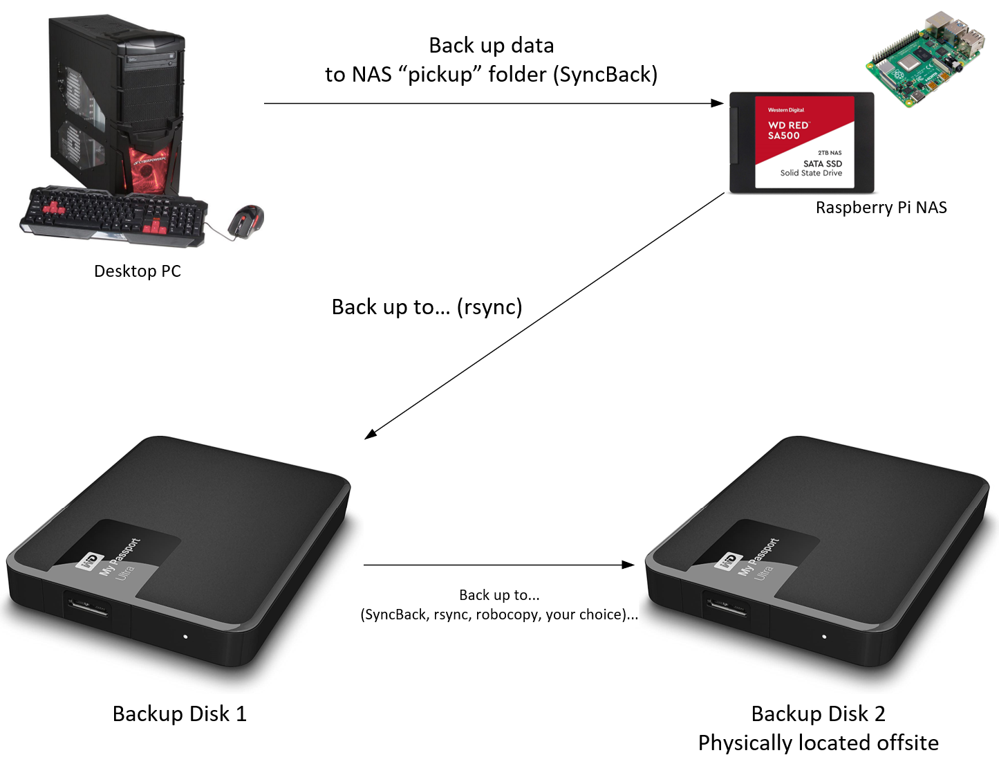

Backing Up Your Data
Author: Steve
A follow-up to a topic from HTH0005
Backing up data in a coherent way is hard. Harder than you'd think it should be. You could always copy things to a separate drive and call it a day, but you have to start factoring in all the possible scenarios where this gets thwarted. What if the building containing both your production and backup data burns down or floods? What if the backup drive fails? Questions like these are why you need to consider how and where you back things up.
Luckily, this has been asked and answered many a time. A standard you can rally behind is called the backup "rule of three." In summary, the rule of three states that you shall have three copies of your data, on at least two different forms of physical media, with at least one of those forms residing offsite.
In the home scenario, you could maintain your three copies by counting your live production data, onsite backup data, and offsite backup data. For software, I have used SyncBack to set up backup profiles, but also dabble in robocopy or rsync to achieve the same goal. What you use will depend on what you are comfortable with.
Before I had a NAS, I would utilize SyncBack to create profiles for the data I wished to back up on my desktop. I would plug my onsite USB external backup drive into the desktop, and run the profiles to back up the data.
The below image represents my "Pre-NAS" setup:

After getting a NAS and moving the majority of my data to it, I slightly changed the way I backed up my data to try to base the backup operations out of the NAS rather than the desktop. My desktop now has a significantly smaller data footprint, and due to this, I now simply copy this data to a "Backup" share on my NAS which acts as a "job pickup" location. Once the desktop data is backed up to the NAS, I plug the "level 1" external USB drive to the NAS on a free USB port and run rsync to copy the data over.
The below image represents my setup with a NAS included:

Here's an example of an rsync command I run on the NAS after all is said and done (I omitted the commands used to mount the disk for simplicity's sake. If you are interested in the commands to mount a disk in Linux, I recommend this article):
rsync -avzh --delete --log-file="/media/usb-drive/Backup/NAS Backup/rsyncBackupLogBackup.txt" "/srv/dev-disk-by-label-Data/Backup" "/media/usb-drive/Backup/NAS Backup/" --exclude 'Thumbs.db' --exclude 'desktop.ini' --exclude '.DS_Store' --exclude 'Folder.jpg' --progress
This particular rysnc command will back up the "job pickup" share named "Backup" on the NAS to a specified location on the external drive (with the mount represented as /media/usb-drive), logging the command output to a folder on said external drive. It also excludes useless files like Thumbs.db, desktop.ini, .DS_Store, and Folder.jpg to keep things tidy on the backup side. This command will copy files in an incremental fashion (skipping over files/folders that have not changed), which saves time.
I have additional rsync commands to back up the remaining native data on the NAS to the external USB drive. These commands are very, very similar to the above one, just with different corresponding source and destination directories
So you have backed up your data to an external drive. Now you need to think of your third entity in your backup rule of three: The offsite copy. I approach this by having a second external disk with storage capacity equal to the first external backup disk. For the majority of its life, this disk lives at an remote location nearby a computer that can perform the "backup of the backup."
Once a week I would physically bring the first backup drive over to the offsite location. I plug both into a computer running SyncBack with profiles to do a differential backup (AKA copy only the data that changed from the last time the backup was run, to save time and disk utilization). After the job is complete, I bring the first backup drive back home. Repeat 7 days later ad infinitum.
This setup ensures you have a local backup of your data as well as maintain a remote offsite backup which is crucial for disaster recovery. To further refine this process, you could instead have a site-to-site VPN connection with a path to the offsite disk to eliminate the physical trips to perform the data backup. For the purpose of this article however, I elected to keep it simple. There is no single right way to perform a data backup, and the intention here is to inspire you to come up with your own solution based on my experience.
Hope this helps!